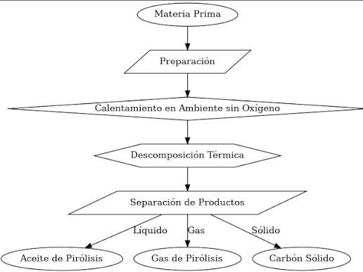
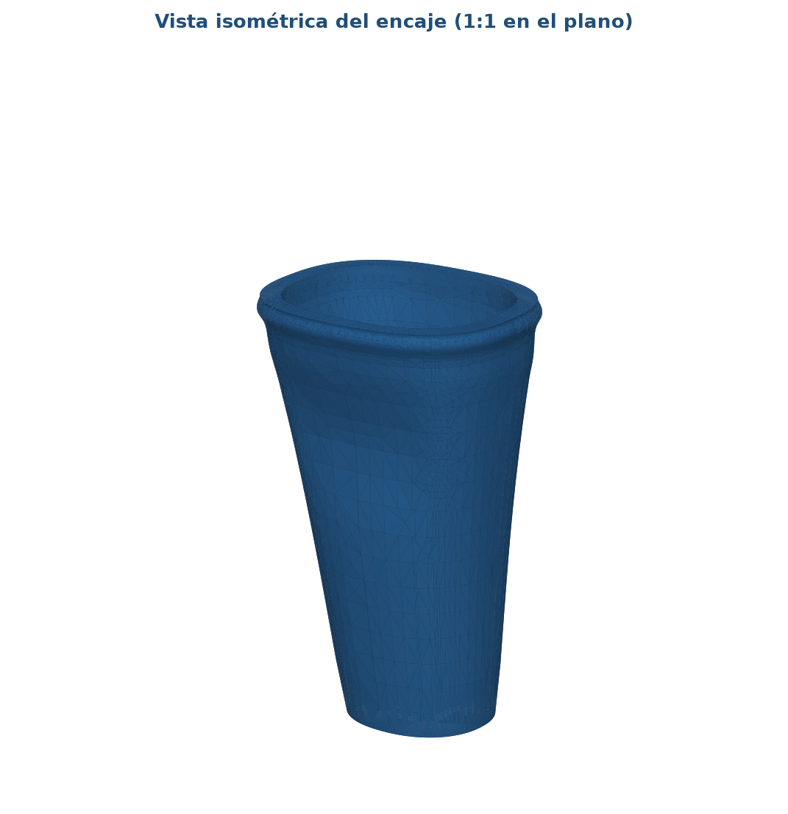
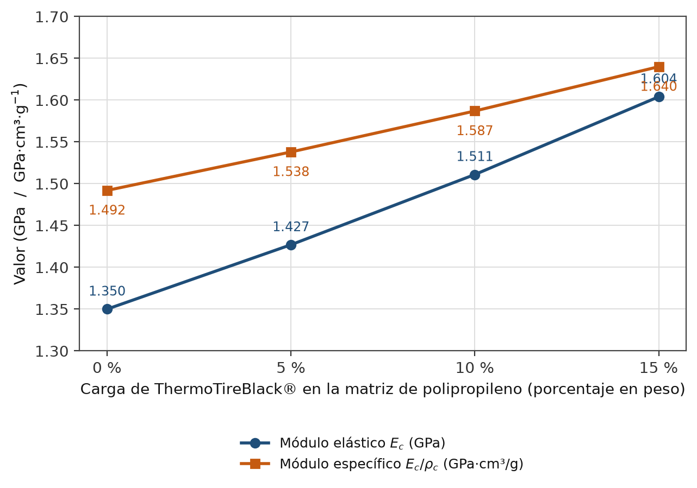
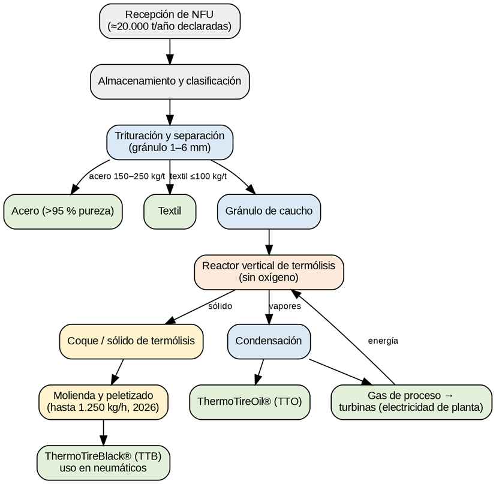
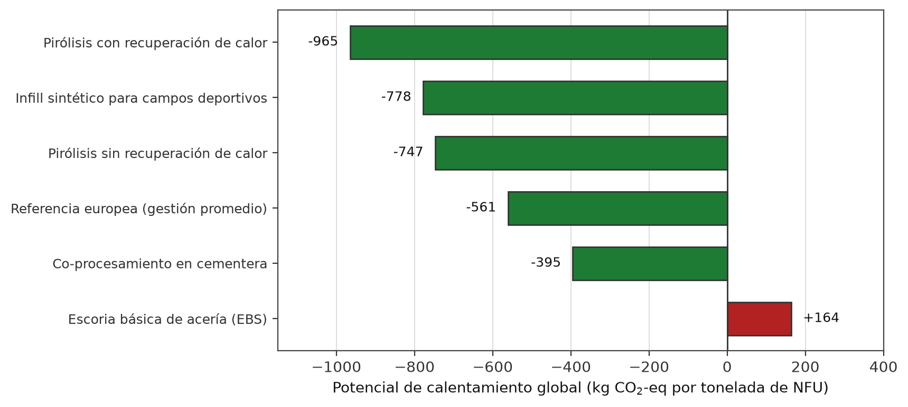
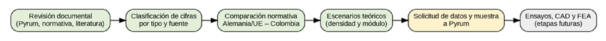
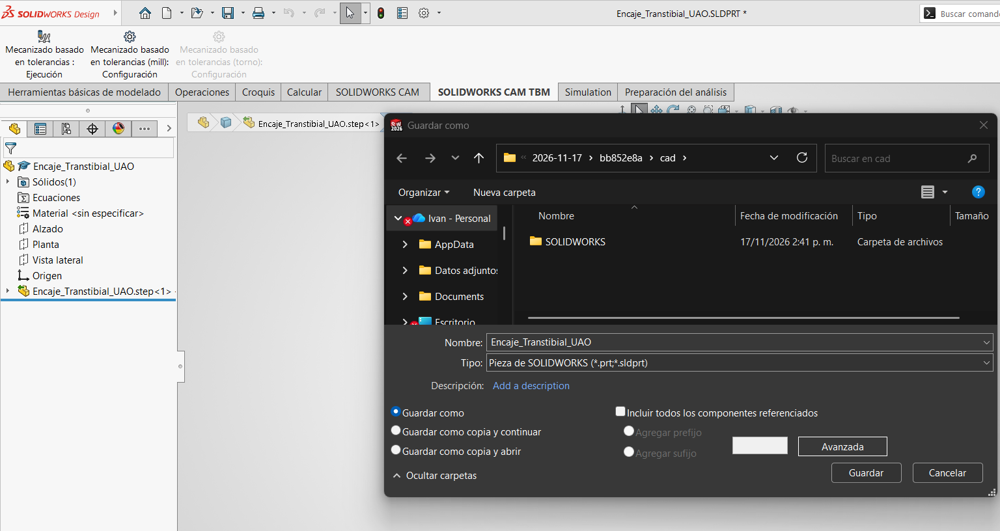
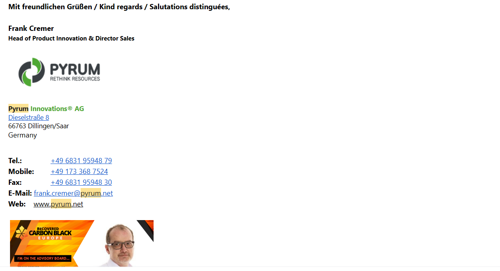
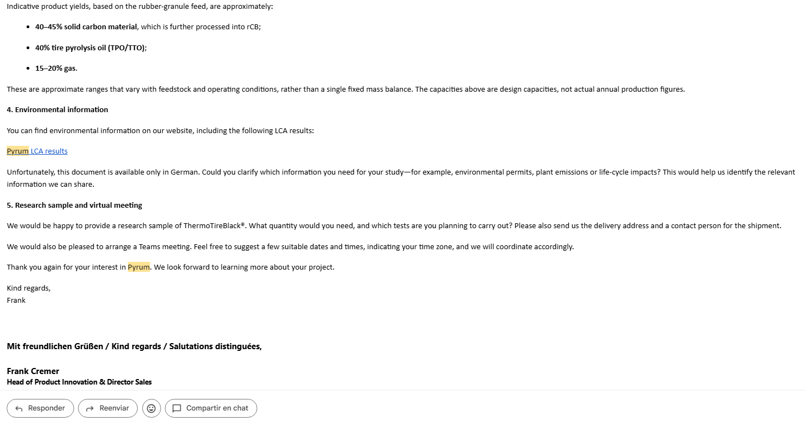
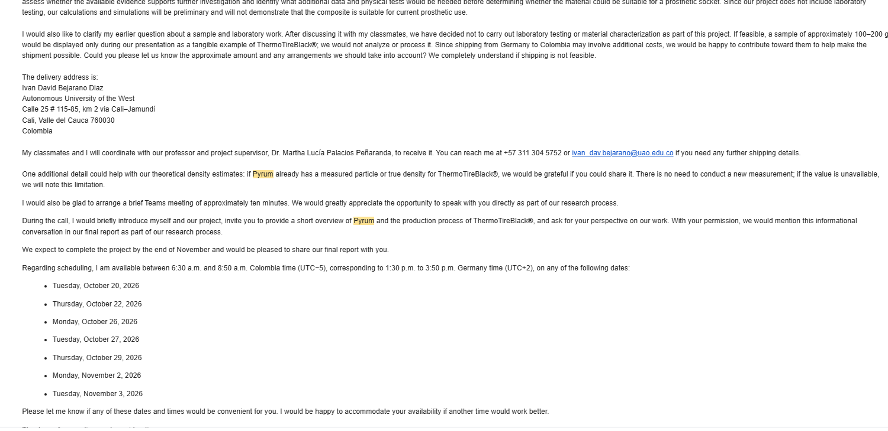

Convertimos llantas usadas en material para prótesis.
O, dicho simplemente: PASO CIRCULAR. Investigamos el negro de humo recuperado por pirólisis de neumáticos fuera de uso —caso de estudio Pyrum Innovations AG— como carga funcional en polipropileno para componentes de prótesis transtibiales, y lo presentamos aquí con su modelo CAD explorable en 3D.



Gastadas, pero lejos de terminar
Cada neumático fuera de uso es un concentrado de caucho, negro de humo y acero. Cuando no existe una ruta de valorización material, ese contenido se pierde en acopios o se quema como combustible. Al mismo tiempo, los componentes estructurales de una prótesis de miembro inferior dependen de polímeros y cargas que hoy se producen casi siempre a partir de recursos vírgenes.
t NFU/año de capacidad de diseño equivalente de la planta de Dillingen, según declaración del productor. Pyrum
reactores dimensionados para ≈5.000 t de granulado de caucho por año cada uno. Pyrum
rendimiento de fracción carbonosa sólida sobre granulado (rango declarado, no balance cerrado). Pyrum
m²/g de área BET indicativa del producto; no se mide de rutina ni se garantiza. Pyrum
Residuo sin ruta de alto valor
En Colombia la gestión de NFU se rige por la Resolución 1326 de 2017 y la Ley 2169 de 2021, pero la valorización material de alto valor sigue siendo marginal frente a la energética. Bibliográfica
Prótesis que dependen de material virgen
Los encajes transtibiales externos se fabrican con termoplásticos y compuestos cuya carga suele ser negro de humo virgen; sustituirla por rCB es la hipótesis de trabajo de esta investigación. Escenario teórico
De la llanta usada al material recuperado
Recepción y trituración
El NFU se tritura y se separa el acero y el textil; al reactor entra únicamente granulado de caucho, nunca el neumático entero. Pyrum
Termólisis
Descomposición térmica sin oxígeno que genera sólido carbonoso (40–45 %), aceite TPO/TTO (≈40 %) y gas (15–20 %) sobre granulado. Pyrum
Procesamiento posterior
El sólido se muele y peletiza como ThermoTireBlack®; el aceite se comercializa con registro REACH y declaración ISCC PLUS reportada. Pyrum
Aplicación en polímeros
La empresa declara ensayos satisfactorios en PP y PE sin detalle de formulación; la literatura sitúa el rango útil de incorporación entre 5 % y 15 % en peso. Bibliográfica


Una matriz apolar y una carga que hay que compatibilizar
Matriz: polipropileno
Se seleccionó PP por su uso documentado en componentes protésicos y por ser la matriz en la que el productor declara ensayos con su producto; PE y PA6 quedaron como alternativas evaluadas. Bibliográfica
Carga: ThermoTireBlack®
Sólido carbonoso de pirólisis con cenizas y grupos oxigenados; BET 65–85 m²/g y STSA 50–70 m²/g indicativos. Pyrum
Compatibilizante: PP-g-MA
Polipropileno injertado con anhídrido maleico, previsto en torno al 2 % en peso para mejorar la adhesión interfacial; su efecto no se midió en este proyecto. Bibliográfica Supuesto
Procedimiento en ocho fases
Literatura y auditoría
Revisión sistemática con DOI verificados y matriz de trazabilidad D01–D24 de la información del productor.
Normativa y micromecánica
Marco Alemania–Colombia y modelo Halpin–Tsai (ξ = 2) para 0, 5, 10 y 15 % en peso.
Sensibilidad y ACV
Análisis de sensibilidad del modelo y análisis de los seis escenarios de ACV de 2022 (ISO 14040/14044).
CAD y multimedia
Modelo paramétrico del encaje con comprobación analítica ISO 10328 y desarrollo de este sitio con visor 3D.

Encaje transtibial externo explorable
El mismo sólido B-rep verificado que se abre en SolidWorks, exportado a glTF binario (.glb) y renderizado aquí con iluminación y materiales. Arrastre para rotar, use la rueda o dos dedos para acercar, y active los modos para inspeccionar la geometría.
Encaje_Transtibial_UAO
- Función
- Transmitir carga del muñón al pilón
- Boca ML / AP
- 114,9 / 95,0 mm
- Profundidad útil
- 180 mm
- Pared medida
- 5,0 – 8,4 mm
- Flexión inicial
- 5°
- Volumen
- 307,4 cm³
- Masa (10 % TTB)
- 293 g
- σ máx P6 / FS
- 2,94 MPa / 9,9
- Triángulos
- 29.774
Diseño de referencia académico generado por script y verificado numéricamente. No es un dispositivo clínico validado. Medida propia ISO 10328
Geometría
Secciones superelípticas con exponente 2,6→2,2, brim reforzado de 8 mm, barra patelar indentada 8 mm a 45 mm del borde y placa distal maciza de 12 mm. Medida propia
Interfaz y pilón
Interfaz piramidal normalizada 30 × 30 × 12 mm con 4 taladros M6 a 22 mm entre ejes, y pilón tubular Ø30 × 1,5 × 250 mm. Bibliográfica
Comprobación
Carga P6 de ISO 10328:2016 (1.500 N, e = 25 mm): σ máx 2,94 MPa frente a fluencia asumida de 28–33 MPa; el dimensionamiento lo gobiernan creep y fatiga, no la rotura estática. Cálculo propio

Lo que predice el modelo, nada más
Calculadora micromecánica (Halpin–Tsai)
Valores del modelo; no son mediciones. Escenario teórico
Escenarios de ACV (modelo 2022)
| Escenario | GWP100 (kg CO₂-eq/t NFU) |
|---|
Resultados del modelo europeo de 2022 con créditos por sustitución; referencia técnica, no dato colombiano. Escenario teórico
Secciones del encaje (verificadas sobre el sólido)
| z (mm) | Área (mm²) | Pared (mm) | Ixx (mm⁴) | Iyy (mm⁴) |
|---|
Comprobación ISO 10328:2016
| Nivel | F (N) | M (N·mm) | σ máx (MPa) | FS (10 % TTB) |
|---|
Conclusiones
- El rCB es técnicamente plausible como carga en PP: hasta +18,8 % de módulo y +9,9 % de módulo específico a 15 % en peso (modelo).
- El desempeño ambiental depende de los créditos por sustitución: de −965 a +164 kg CO₂-eq/t NFU según escenario (modelo europeo de 2022; referencia técnica, no dato colombiano).
- El encaje modelado cumple con margen el criterio estático de ISO 10328 (FS 9,9 bajo P6); el reto real es creep y fatiga del PP.
- La información del productor basta para viabilidad, no para diseño detallado: brechas documentadas, no suplidas con afirmaciones.
Correspondencia y fichas: la evidencia declarada
Entre el 29 de septiembre y el 11 de noviembre de 2026 el equipo sostuvo un intercambio documental con Pyrum Innovations AG (F. Cremer, Head of Product Innovation & Director Sales). Las capturas siguientes reproducen ese hilo en orden cronológico; las tablas resumen la ficha técnica (TDS PI-ADA-PYR-004, rev. 6, 30/07/2026) y la ficha de seguridad (SDS-TTB-EN, versión 7, 08/07/2026). Todo el contenido de esta sección es documentación del productor: no es medición propia ni validación independiente.
Hilo de correos (capturas reales)







Ficha técnica TDS PI-ADA-PYR-004 (rev. 6, 30/07/2026)
| Parámetro | Método | Valor típico | Unidad |
|---|---|---|---|
| Densidad de vertido | ASTM D1513 | 450–550 | kg/m³ |
| Contenido de carbono | DIN 51732 | > 75 | % |
| Contenido de ceniza | ASTM D8474 | ≤ 25 | % |
| Contenido de azufre | DIN 51732 | 2,0–2,6 | % |
| pH | ASTM D1512 | 6–10 | adimensional |
| Suma de 8 HAP (UE 1272/2013) | DIN ISO 18289 | < 1 | ppm |
| Distribución de tamaño DV(97) | ASTM WK87480 | < 10 | µm |
| Dureza media de pellet (20) | ASTM D5230 | 20–55 | cN |
| Promedio 5 más duros (25 %) | ASTM D5230 | < 90 | cN |
| Dureza máxima de pellet | ASTM D5230 | < 95 | cN |
| Residuo en tamiz (malla 325) | ASTM D1514 | < 0,001 | % |
| Contenido de finos | ASTM D1508 | ≤ 10 | % |
| Distribución de tamaño de pellet | ASTM D1511 | ≤ 3,0 | mm |
| Transmitancia del extracto en tolueno | ASTM D1618 | ≥ 80 | % |
| Contenido volátil (550 °C) | ASTM D8474 | < 3,0 | % |
| Pérdida por calentamiento | ASTM D1509 | ≤ 2 | % |
Ficha de seguridad SDS-TTB-EN (versión 7, 08/07/2026)
| Concepto | Valor documentado | Sección SDS |
|---|---|---|
| Identificación | CAS 1333-86-4, EINECS 215-609-9 | 1.1 |
| REACH | Exento: producto de reciclaje, art. 2(7)(d) | 1.1 |
| Clasificación CLP | No clasificado; sin pictogramas, palabra de advertencia ni frases H | 2 |
| Composición | Carbon black 70–90 %; SiO₂ 10–25 %; ZnS < 4,5 % | 3 |
| Límites de exposición (carbon black) | A-Dust 1,25 mg/m³; E-Dust 10 mg/m³ | 8 |
| pH | 7–9 (ASTM D1512 / DIN ISO 10390) | 9 |
| Densidad verdadera | «Not determined» | 9 |
| Densidad a granel | 600–800 kg/m³ | 9 |
| Inflamabilidad | No inflamable; ignición > 600 °C; autoignición 150 °C; BZ3 | 9 |
| Explosividad de polvo | LEL 100 g/m³; Pmax 9,8 bar; dP/dt 218 bar/s; Kst 59 bar·m/s | 9.2 |
| Sílice cristalina respirable | < 0,01 % (EN 17289-3) | 9.2 |
| Transporte y agua | No mercancía peligrosa (ADR/IMDG/IATA); no peligroso para el agua; TRGS 510 cat. 10–13 | 14–15 |
Coherencia con el modelo: la SDS declara la densidad verdadera como «Not determined» (§9); por tanto, la densidad de partícula empleada en Halpin–Tsai permanece como supuesto teórico documentado (§7.8 del trabajo de grado). La densidad de vertido TDS (450–550 kg/m³) y la densidad a granel SDS (600–800 kg/m³) corresponden a estados y métodos distintos y se reportan sin conciliar. Los datos de explosividad de polvo alimentan notas de manipulación y almacenamiento, no el modelo mecánico.
Todo el proyecto, descargable
Referencias seleccionadas (APA 7)
- Anupabphan, A., et al. (2025). ACS Omega, 10(37), 42451–42460. https://doi.org/10.1021/acsomega.5c02908
- Campbell, J., et al. (2012). Prosthetics and Orthotics International, 36(2), 181–189. https://doi.org/10.1177/0309364611434568
- Cardona-Uribe, N., et al. (2021). Sustainable Materials and Technologies, 28, e00287. https://doi.org/10.1016/j.susmat.2021.e00287
- ISO. (2016). ISO 10328:2016. External prostheses for the lower limbs — Requirements and test methods.
- Maga, D., Aryan, V., & Blömer, J. (2022). Life cycle assessment of pyrolysis of used tyres. Fraunhofer UMSICHT.
- Martínez, J. D., et al. (2013). Renewable and Sustainable Energy Reviews, 23, 179–213. https://doi.org/10.1016/j.rser.2013.02.038
- Nagarajan, R., et al. (2024). Prosthesis, 6(3), 457–477. https://doi.org/10.3390/prosthesis6030033
- Pyrum Innovations AG. (2026a). Respuesta técnica a solicitud académica, 29 de septiembre, 13 de octubre y 11 de noviembre de 2026 [Anexo B del trabajo de grado].
- Pyrum Innovations AG. (2026b). Technical Data Sheet ThermoTireBlack® (PI-ADA-PYR-004, rev. 6, 30 de julio de 2026).
- Pyrum Innovations AG. (2026c). Safety Data Sheet ThermoTireBlack (TTB) (SDS-TTB-EN, versión 7, 8 de julio de 2026).